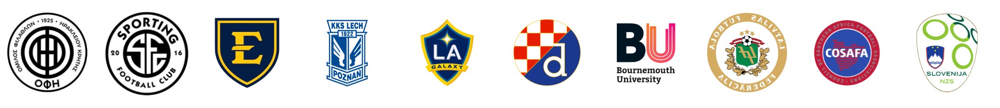

The course that takes the science the report introduced and turns it into the way you develop young goalkeepers from U9 all the way to the senior pathway. Ten modules. Nine faculty drawn from FC Barcelona academy, professional youth setups, and elite international youth development. Built for the coach who wants to break the chain, not pass it down.
The report named what was missing. The Shot-Stopper's Trap. WHAT knowledge without WHY. By the time you finish this course, that question retires for good. You will explain not just what to train, but why, when, and how. To your young goalkeeper. To the parent on the touchline. To the academy director who asks how the U16s are being prepared for the senior pathway. To yourself, on the drive home from a Saturday game where one of them froze.
Trusted by goalkeeper coaches in 70+ countries. ISSPF rated 4.4/5 from 76 verified Trustpilot reviews. Accredited by leading universities.

Endorsed & Accredited By Leading Universities And Elite Clubs


The team environment that builds the goalkeeper, not just the position.
And they don't know it.
The 775-goal study in the report told you something most coaches have never heard. Of every goal scored at the professional level, only 3.6% were genuine must-saves. The other 96.4% were either physically unsaveable or sat in a borderline grey zone.
Read that one more time. 96 out of every 100 goals are decided before the goalkeeper's hands ever get involved.
If that's true, and it is, then everything we call goalkeeper coaching needs a rewrite. Because what most coaches train, hour after hour, week after week, is the 3.6%. The dive. The catch. The footwork pattern. The shape on the cross.
Those things matter. They will never be the job.
The Job Is The 96.4%.
The job is what the goalkeeper does in the seconds, minutes, sessions and seasons before that 3.6% moment arrives. Where they're standing. What they're scanning. What their brain has already decided. How their body has been built. How they've been protected from the wrong kind of failure and exposed to the right kind. That work is invisible. It does not look like a save. It does not show up on a highlight reel. It is the entire science underneath the position. And it is what this course teaches.
You walk out able to explain why each one earns its place at U13 and not at U11.
You know the drive home from training. The post-session loop where the doubt creeps in. Did the U13 actually develop tonight, or did they just get tired? Why did Cachulo's pillars work for Tom and not for Adam? What do I tell the parent on Saturday who wants to know why their fourteen-year-old isn't doing more strength work yet? What do I say to the academy director who asks how the U16s are being prepared for senior football?
You can run forty youth drills without repeating yourself. You're not a beginner. You've sat through enough YouTube to know who's serious and who's selling. The gap isn't in your effort or your hours. It's in the layer underneath. The layer most coaching qualifications never touched, especially on the youth side.
The course replaces it. Not with theory you'll never use. With the exact frameworks the lecturers in this faculty use every week inside FC Barcelona academy, professional youth setups, and a handful of national youth programmes. You see the development science. You see the application. Then you redesign your own youth sessions from the inside out.

Coaching from understanding, not inheritance.
The course is structured the way elite youth goalkeeper coaches actually think about the position. From philosophy through skill acquisition, pressure management, LTAD, nutrition, analysis, and finishing inside an FC Barcelona academy case study. Each module taught by the lecturer who lives that work for a living.

Science for youth development. Not theory for theory's sake.
Self-paced. Watch when it suits you, come back to any module any time.
Enrol NowEach one teaching the part of the youth position they spend their working week inside. Not academic theorists. Practitioners who walk onto the grass at FC Barcelona, professional academies, and elite international youth environments.
 Dani OrtizFC Barcelona Academy GK Coach
Dani OrtizFC Barcelona Academy GK Coach
 Eduardo CachuloLong-term GK development specialist
Eduardo CachuloLong-term GK development specialist
 Daniel Tumelty-BevanSkill acquisition theorist
Daniel Tumelty-BevanSkill acquisition theorist
 Alex Segovia VilchezLTAD operationalisation specialist
Alex Segovia VilchezLTAD operationalisation specialist
 Jack ChristopherAcademy nutrition and sport science
Jack ChristopherAcademy nutrition and sport science
 Graeme SmithUEFA-licensed goalkeeping analyst
Graeme SmithUEFA-licensed goalkeeping analyst
 Ivan KovčićIndividual development inside team environments
Ivan KovčićIndividual development inside team environments
 Jeff RichardsonMental performance coach, elite soccer
Jeff RichardsonMental performance coach, elite soccer
ISSPF courses are accredited by leading universities. Rated 4.4 out of 5 from 76 verified Trustpilot reviews. Trusted by goalkeeper coaches in over 70 countries.
Every coaching instinct says shield the young goalkeeper. Soft hands during the rondo. Easier shots in finishing drills. The training session that ends on a confidence-builder save so they leave smiling.
The Albert Puig principle, as taught by Eduardo Cachulo inside Module M3, says the opposite: protect a young goalkeeper from failure and you protect them from growth.
Read that again. The thing your instinct tells you to soften is the exact stimulus the science says builds the goalkeeper.
Skill acquisition research lands in the same place. Isolated drills where the goalkeeper looks technically clean on Tuesday do not transfer to Saturday. What transfers is contextual practice that lets them fail, recover, and decode the situation. The Matryoshka doll Daniel Tumelty-Bevan teaches in Module M4. Situation, position, decision, action. The kid who masters the drill and freezes in the match has been trained on the wrong layer.
Then comes the LTAD architecture, taught by Alex Segovia Vilchez and underpinned by Graeme Smith's developmental analysis framework. The science scales from U9 all the way to senior. What changes is not the principles. What changes is the application.
The permission this gives the coach is profound: stop softening. Start coaching the game. The young goalkeeper who is allowed to fail in training is the senior goalkeeper who handles failure in matches.

Failure earned in training. Growth earned on Saturday.
If the first list sounds like you, this course will land hard.

The Saturday after the session. Still developing.

Awarded On CompletionProfessional Certificate
Professional Certificate In

The first runs the same youth drills they ran last Tuesday. Same WHAT. Same hope it transfers. Same uncertainty when the parent on the touchline asks why.
The second knows why every drill is there, why it belongs at U13 and not at U11, why this child's freeze last Saturday is not "a confidence dip" but a coachable signal. Knows what to say when the academy director asks how the U16s are being prepared for senior football.
The second coach is not born. They are built. Module by module. Ten of them.
Enrol Now · £249 / $299